Environment Art — City
Large-scale urban environment emphasising mood, composition and storytelling through props and lighting.
This project focuses on architectural storytelling, material quality, and cinematic lighting. A short cinematic and several in-engine captures illustrate the project's progression. The scene was built from blockout to final polish, beginning with scale-accurate layout work in Blender before being developed and lit in UE5. s a narrative-driven, game-ready interior environment created in Unreal Engine 5, based on concept art by Alec Chalmers. The project was developed to address a gap in my portfolio by producing a single, fully realised environment that demonstrates both artistic direction and professional environment art workflows.
"The final result is a polished, walkable environment that demonstrates my ability to combine technical efficiency with narrative-driven environment design."
Cinematic Render
Renders, in-engine captures and cinematic excerpts.
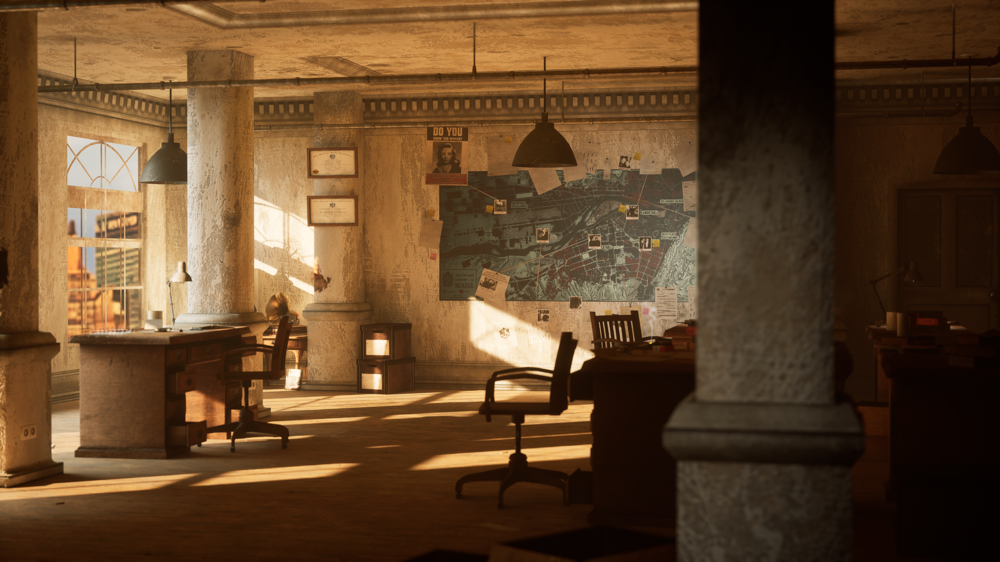
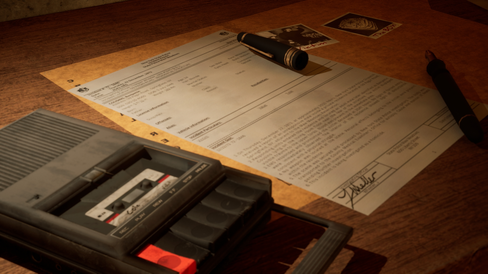
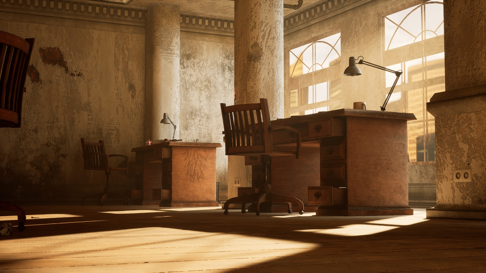
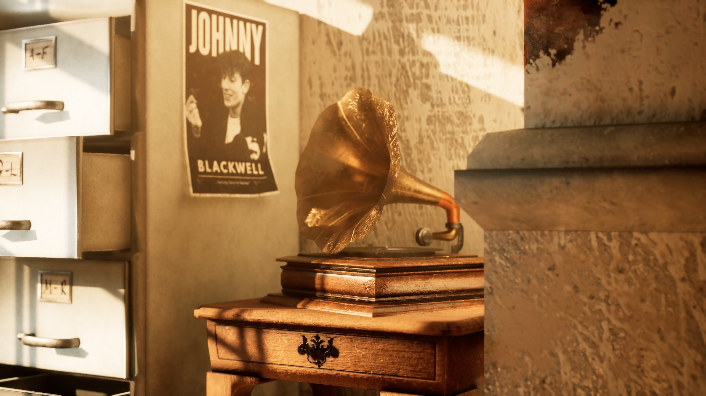
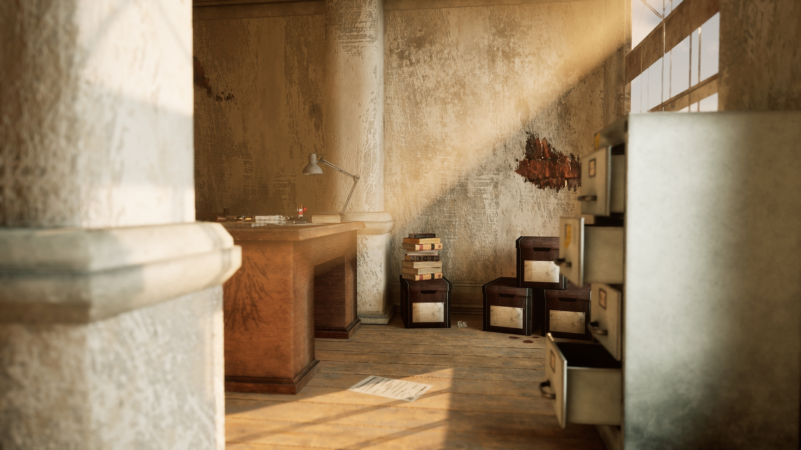
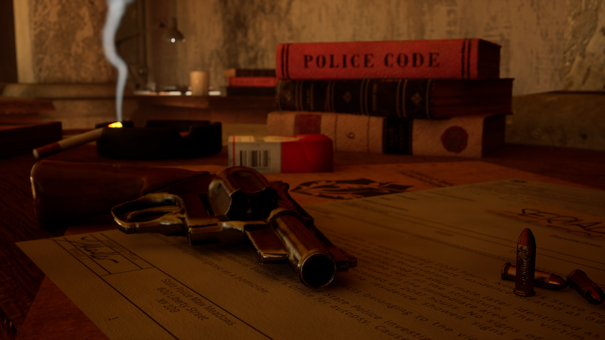
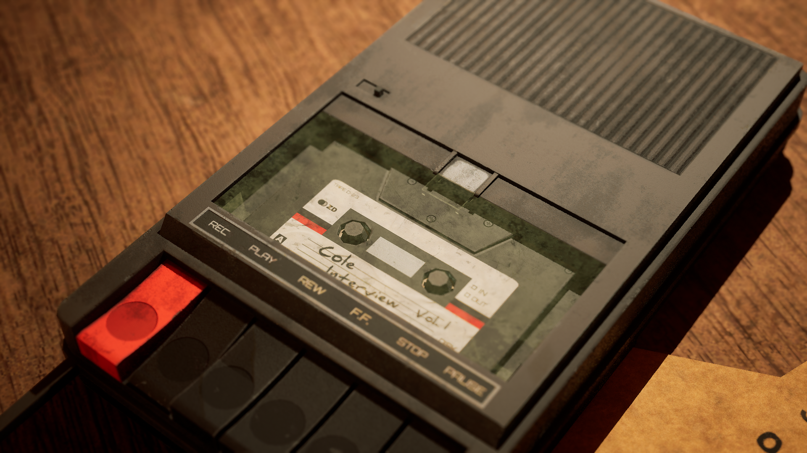
Technical notes, shader work, cinematics and asset pipeline details.
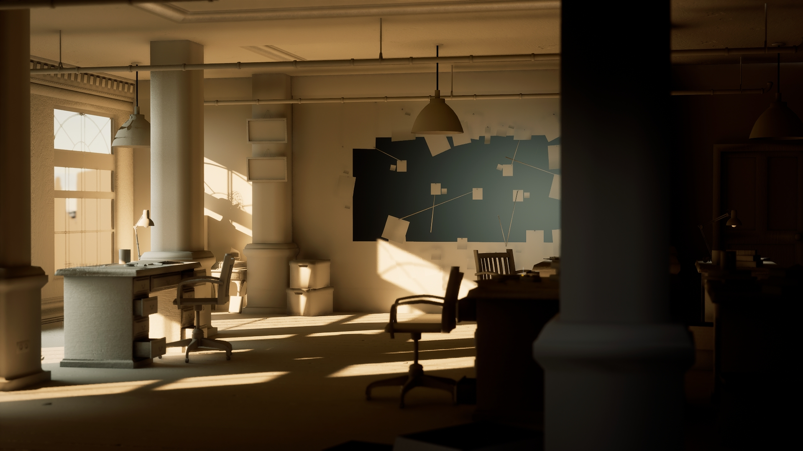
Lighting and atmosphere were treated as key storytelling tools. High-contrast lighting, volumetric effects, fog, and post-processing were used to establish mood and guide the viewer’s eye through the environment. The scene supports a first-person walkthrough and incorporates spatial audio, including ambient city noise, mechanical sounds, and subtle environmental effects, to enhance immersion and realism.
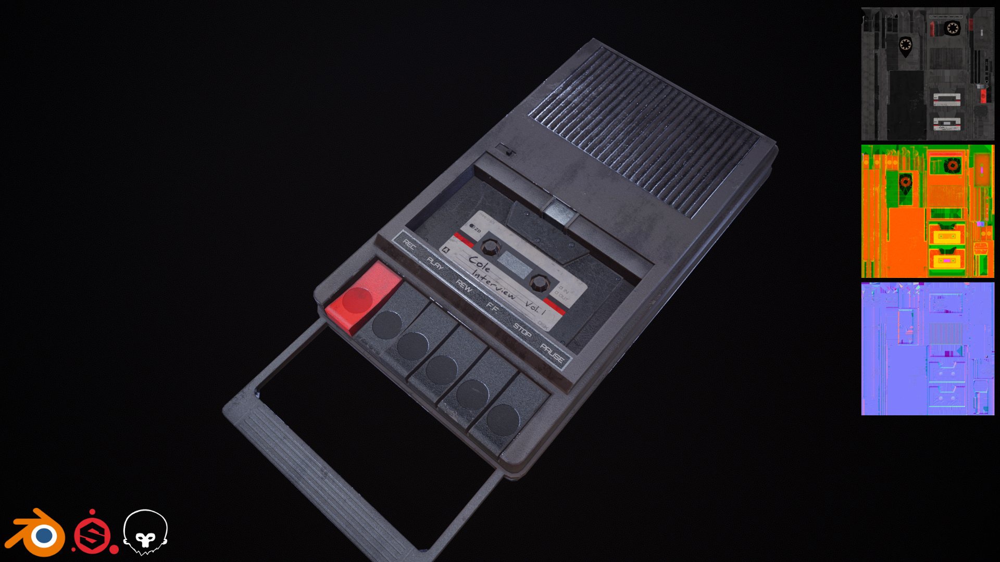
Used packed textures and custom material instances to reduce draw calls. Detail on UV packing and mask usage can be added here.
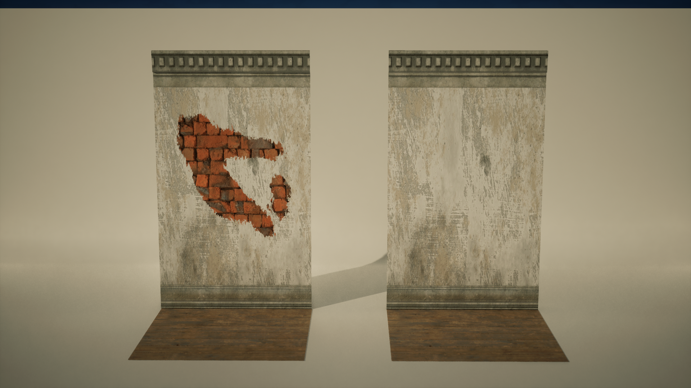
Modular construction and trim sheets were used extensively for walls and architectural elements, allowing efficient asset reuse while maintaining visual variety. Vertex painting and decals were applied to break repetition and introduce material wear, grime, and age consistent with a noir-inspired 1970s New York setting.
A strong emphasis was placed on environmental storytelling. Props such as paperwork, photographs, weapons, and office clutter were deliberately placed to imply an active murder investigation and suggest character behaviour without explicit narrative prompts. A central hero object was designed to act as a focal point for both composition and story, reinforcing the psychological tone of the space.
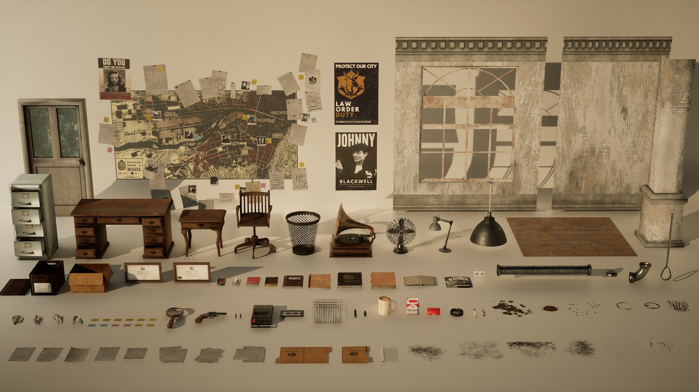
A strong emphasis was placed on environmental storytelling. Props such as paperwork, photographs, weapons, and office clutter were deliberately placed to imply an active murder investigation and suggest character behaviour without explicit narrative prompts. A central hero object was designed to act as a focal point for both composition and story, reinforcing the psychological tone of the space.
A strong emphasis was placed on environmental storytelling. Props such as paperwork, photographs, weapons, and office clutter were deliberately placed to imply an active murder investigation and suggest character behaviour without explicit narrative prompts. A central hero object was designed to act as a focal point for both composition and story, reinforcing the psychological tone of the space.